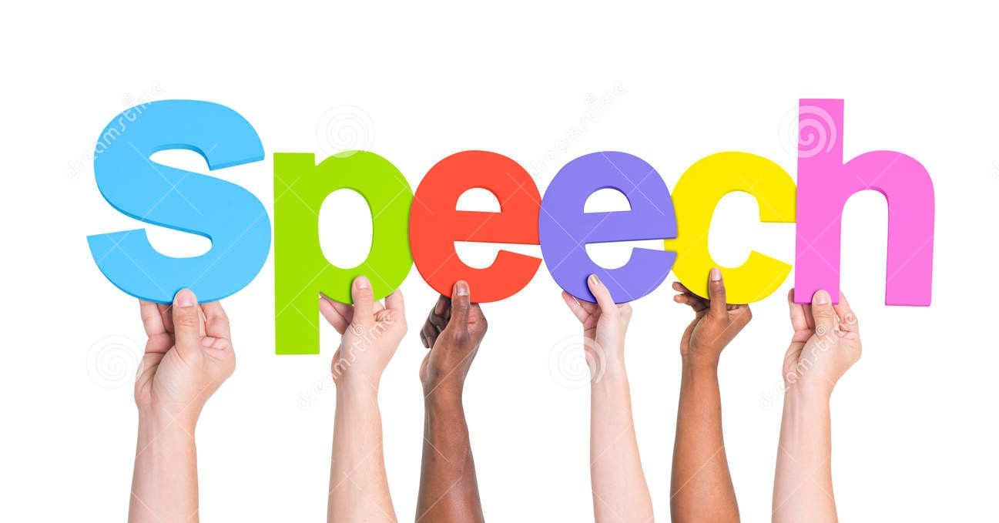
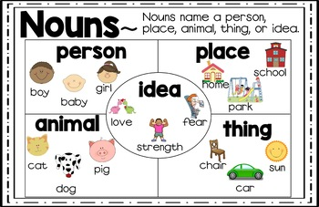
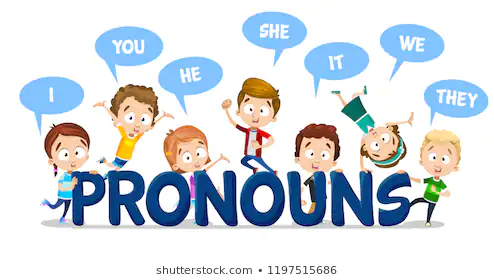
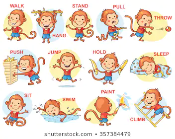
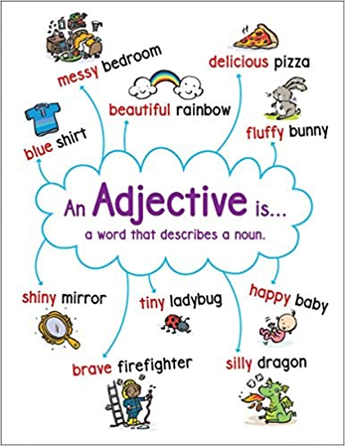
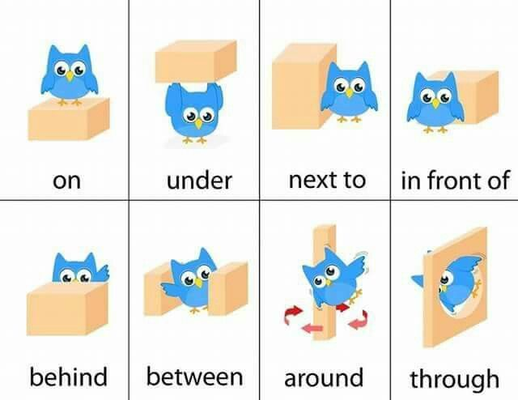
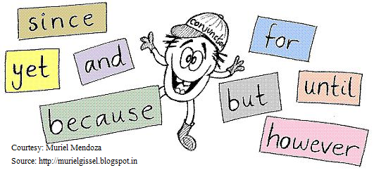
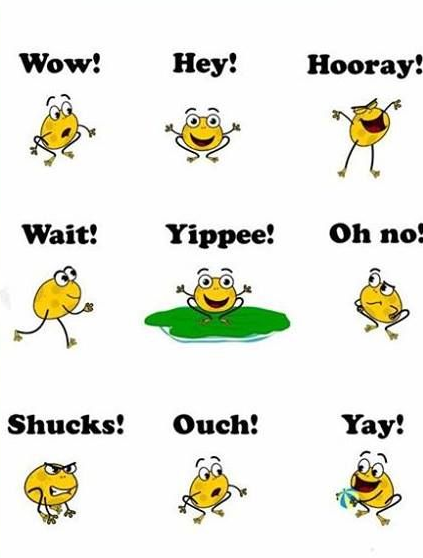

1. SPEECH
| What is a speech? | |
|
 |
Parts of a speech...
 |
There are mainly 8 parts of a speech: |
1.NOUN
Anna, Bob, Garden, Music, Kandy, Cat, work, teacher... The young girl brought me a very long letter from the teacher, and then she quickly disappeared. Oh my! |
 |
2.PRONOUN
|  |
He, Its, me, she, that, this, those, us, who, whom, you... The young girl brought me a very long letter from the teacher, and then she quickly disappeared. Oh my! |
3.VERBS
run, go, swim, study, understood, will do, sing, walk... The young girl brought me a very long letter from the teacher, and then she quickly disappeared. Oh my! |
 |
4.ADJECTIVES
|  |
good, pretty, comfortable,angry, brave, healthy... The young girl brought me a very long letter from the teacher, and then she quickly disappeared. Oh my! |
5.ADVERBS
Actively, beautifully, quickly, carefully,well,nearly... The young girl brought me a verylong letter from the teacher, and then she quickly disappeared. Oh my! |

|
6.PREPOSITION
|  |
in, on, under, near, with, without,from, by... The young girl brought me a very long letter from the teacher, and then she quickly disappeared. Oh my! |
7.CONJUNCTION
and, or ,but, so, after, before,unless... The young girl brought me a very long letter from the teacher, and then she quickly disappeared. Oh my! |
 |
8.INTERJECTION
|  |
aha!, Oh!, hey!, hi!.... The young girl brought me a very long letter from the teacher, and then she quickly disappeared. Oh my! |